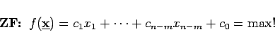
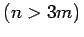

Inhalt Index DeskTop Bronstein

 Optimierung Lineare Optimierung Simplexverfahren Revidiertes Simplexverfahren
Optimierung Lineare Optimierung Simplexverfahren Revidiertes Simplexverfahren


Das lineare Optimierungsproblem sei in einer Normalform gegeben:
|  | (18.18a) |
Um zu einer anderen Normalform und damit zu einer anderen Ecke zu wechseln, genügt es, das Gleichungssystem (18.18b) mit der entsprechenden Basisinversen zu multiplizieren. Das Simplexverfahren kann also dahingehend modifiziert werden, daß in jedem Schritt anstatt eines neuen Tableaus nur die Basisinverse ermittelt wird. Vom eigentlichen Tableau sind nur die zur Bestimmung des neuen Pivotelements erforderlichen Größen zu berechnen. Ist die Anzahl der Variablen sehr groß im Vergleich zur Anzahl der Nebenbedingungen , dann erreicht man mit der revidierten Simplexmethode eine beachtliche Verringerung an Rechenaufwand und Speicherplatz bei gleichzeitiger Erhöhung der Rechengenauigkeit.
Die allgemeine Form eines revidierten Simplextableaus zeigt das folgende Schema.
Die eingetragenen Größen haben die folgende Bedeutung: